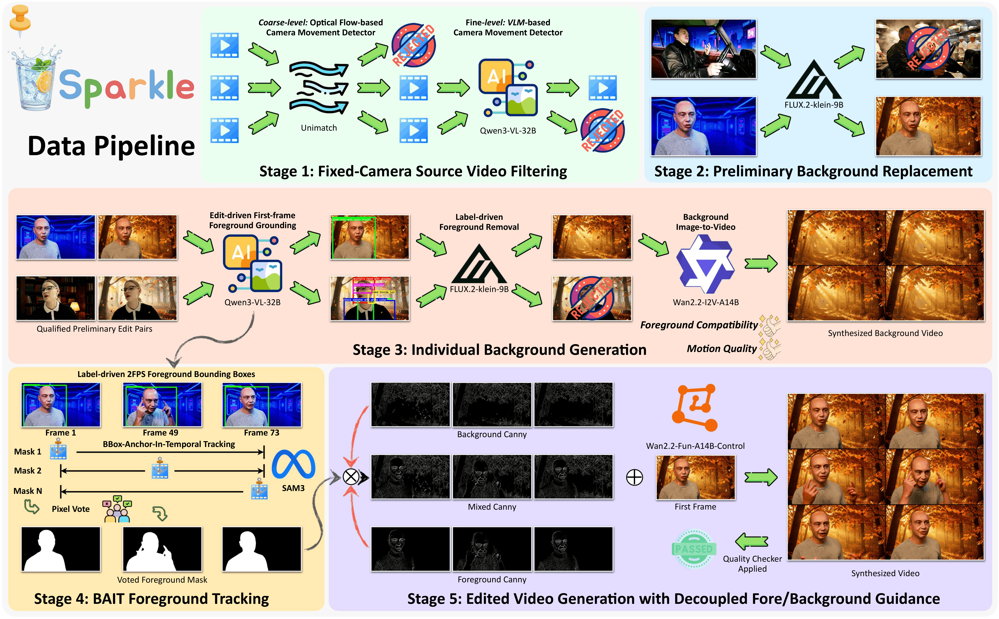

Show Lab, National University of Singapore
Shift the background to a sunlit vineyard with rows of grapevines stretching into the distance, where golden light filters through rustling green leaves gently swaying in a warm breeze, and soft shadows dance across the earth below.
Place the subject in an open prairie under a vast sky, with tall golden grass swaying vigorously in a strong wind, creating waves of motion across the landscape, and distant rolling hills fading into a hazy horizon.
Put the subject against a spring meadow where melting snow reveals patches of vibrant green grass, with gentle streams of water flowing over the ground and sunlight filtering through budding trees, creating soft, shifting shadows and glistening droplets in the air.
Move the subject to a serene spring park filled with cherry blossom trees in full bloom, soft golden sunlight filtering through the pink canopies, and delicate petals gently drifting through the air in a subtle, animated breeze.
Shift the background to a serene twilight landscape with the fading sun casting warm orange and pink hues across the horizon, silhouetting distant trees that sway gently in the breeze, while soft, drifting clouds slowly move across the sky illuminated by the last rays of light.
Place the subject in a serene morning landscape where soft golden light filters through a thick layer of rolling mist over a forested valley, with drifting fog gently swaying between trees and subtle sunbeams piercing through the canopy.
Move the subject to a medieval stone-and-timber village setting with cobblestone paths, thatched-roof cottages, and wooden beams, where warm flickering torchlight casts dancing shadows and embers float gently in the evening air.
Set the scene to a sci-fi dystopian industrial wasteland with crumbling metallic structures, flickering neon signs, and floating debris drifting slowly in the air. Add a hazy, toxic orange glow emanating from distant smelters, with subtle animated smoke trails rising from broken pipes.
In recent years, open-source efforts like Señorita-2M have propelled video editing toward natural language instruction. However, current publicly available datasets predominantly focus on local editing or style transfer, which largely preserve the original scene structure and are easier to scale. In contrast, Background Replacement, a task central to creative applications such as film production and advertising, requires synthesizing entirely new, temporally consistent scenes while maintaining accurate foreground-background interactions, making large-scale data generation significantly more challenging. Consequently, this complex task remains largely underexplored due to a scarcity of high-quality training data. This gap is evident in poorly performing state-of-the-art models, e.g., Kiwi-Edit, because the primary open-source dataset that contains this task, i.e., OpenVE-3M, frequently produces static, unnatural backgrounds.
In this paper, we trace this quality degradation to a lack of precise background guidance during data synthesis. Accordingly, we design a scalable pipeline that generates foreground and background guidance in a decoupled manner with strict quality filtering. Building on this pipeline, we introduce Sparkle, a dataset of ~140K video pairs spanning five common background-change themes, alongside Sparkle-Bench, the largest evaluation benchmark tailored for background replacement to date. Experiments demonstrate that our dataset and the model trained on it achieve substantially better performance than all existing baselines on both OpenVE-Bench and Sparkle-Bench. Our proposed dataset, benchmark, and model are fully open-sourced at github.com/showlab/Sparkle.
We build Sparkle from a sequential 5-stage pipeline whose central design choice is to decouple foreground and background guidance throughout data synthesis. The full pipeline is illustrated below.

Stage 1: Fixed-Camera Source Video Filtering. Unimatch optical flow with RANSAC homography (coarse) and Qwen3-VL-32B chain-of-thought reasoning (fine) reduce ~940K source candidates down to ~224K static-camera videos.
Stage 2: Preliminary Background Replacement. Qwen3-VL-32B composes an editing instruction over our scene taxonomy of 4 themes and ~22 subthemes, FLUX.2-klein-9B edits the first frame, and EditScore filters out misaligned outputs.
Stage 3: Individual Background Generation. To enable explicit background guidance, we detach the foreground entirely: Qwen3-VL-32B grounds foreground objects, FLUX.2-klein-9B erases them, and Wan2.2-I2V-A14B animates the resulting clean image into a foreground-free dynamic background video.
Stage 4: BAIT Foreground Tracking. Bbox-Anchor-In-Temporal (BAIT) runs SAM3 from N frame-wise foreground bounding boxes detected at 2 FPS by Qwen3-VL-32B, then pixel-wise votes the N resulting masks into a clean and precise foreground mask, suppressing entity loss and noise glitches that plague single-pass tracking.
Stage 5: Edited Video Generation with Decoupled Guidance. Source and synthesized-background Canny edges are fused along the BAIT mask and consumed by Wan2.2-Fun-A14B-Control to regenerate the final video, with a last EditScore pass discarding low-quality outputs.
Given identical source videos and editing prompts, OpenVE-3M frequently suffers from prompt misalignment and unnaturally static backgrounds. Sparkle, in contrast, faithfully renders requested elements and preserves background dynamics.
Source
OpenVE-3M
Sparkle (Ours)
Replace the background with a classic library study. The desk lamp flickers softly, dust motes float in the warm light, and a gentle breeze causes the curtains to sway slightly. The subject should remain perfectly still.
Source
OpenVE-3M
Sparkle (Ours)
Replace the background with a lively tropical beach where waves gently roll in, palm fronds sway in a light breeze, seagulls fly in the distance, and sunlight sparkles on the water surface, while the foreground character remains still.
Source
OpenVE-3M
Sparkle (Ours)
Replace the background with a dynamic vintage European street cafe. The scene should include flickering street lamps, gentle movement of leaves in a light breeze, and occasional passersby strolling softly in the distance. The subject should remain perfectly still.
Source
OpenVE-3M
Sparkle (Ours)
Transform the background into a lively enchanted forest clearing with gentle rays of sunlight flickering through leaves, soft wind causing subtle movement in the foliage, and occasional floating motes of light drifting through the air. The person remains still in the foreground.
Fine-tuning Kiwi-Edit on Sparkle (yielding Kiwi-Sparkle) restores dynamic backgrounds and harmonizes foreground lighting with the new scene, without any architectural changes. We illustrate the comparisons below.
Source
Kiwi-Edit
Kiwi-Sparkle (Ours)
Put the subject against a cascading waterfall flowing over mossy rocks in a lush forest, with mist gently rising and sunlight filtering through swaying trees in the background.
Source
Kiwi-Edit
Kiwi-Sparkle (Ours)
Set the scene to a sweltering summer day with heat haze shimmering across a dry, sunbaked earth. Replace the forest with sparse, heat-stressed shrubs and cracked soil, and add dynamic, rising waves of shimmering air distorting the horizon under a bright, glaring sun.
Source
Kiwi-Edit
Kiwi-Sparkle (Ours)
Swap the background to a serene dawn scene where the first rays of golden light break through soft, drifting clouds, casting dynamic, elongated shadows across a misty forest clearing, with gentle ripples on a nearby pond reflecting the rising sun.
Source
Kiwi-Edit
Kiwi-Sparkle (Ours)
Change the background to an oil painting style with visible brushstroke textures, depicting a dynamic, smoky forest at dusk with flickering embers drifting upward from a glowing campfire, and soft, swirling mist moving across the scene to create a sense of flowing energy.
Kiwi-Sparkle inherits a strong foreground tracking capability from our BAIT algorithm. By prompting it with the trigger phrase "a minimalist clean white space", Kiwi-Sparkle cleanly isolates complex foreground subjects onto a clean white background, suggesting a potential editing-oriented object segmentation paradigm.
Change the background to a minimalist clean white space with subtle floating particles that gently drift upward and softly glow, creating a serene and dynamic atmosphere while preserving spatial coherence.
Replace the background with a minimalist clean white space, featuring a subtle gradient of soft light that gently shifts across the surface, and add faint, slowly drifting white particles that float upward, creating a serene and dynamic atmosphere.
Place the subject in a minimalist clean white space background with soft, floating white particles drifting gently upward, creating a serene and animated atmosphere.
Swap the background to a minimalist clean white space with soft, floating particles gently drifting upward and subtle light reflections shimmering across the surface, maintaining a serene and animated atmosphere.
OpenVE-Bench
| Model | Params | Overall | Ins. | Cons. | VQ. |
|---|---|---|---|---|---|
| Kiwi-Edit | 5B | 2.58 | 2.81 | 2.58 | 2.36 |
| UniVideo | 13B | 2.74 | 3.12 | 2.64 | 2.46 |
| Kiwi-Sparkle (Ours) | 5B | 3.29 | 3.51 | 3.15 | 3.22 |
Sparkle-Bench
| Model | Overall | Ins. | Vis. | FgIn. | FgMo. | BgDy. | BgVi. |
|---|---|---|---|---|---|---|---|
| Kiwi-Edit | 2.54 | 2.92 | 2.15 | 2.86 | 2.90 | 1.57 | 2.84 |
| Lucy-Edit-1.1 | 2.74 | 3.06 | 2.23 | 2.78 | 3.04 | 2.46 | 2.83 |
| Kiwi-Sparkle (Ours) | 3.81 | 4.10 | 3.40 | 3.77 | 4.05 | 3.54 | 3.99 |
@misc{zeng2026sparkle,
title = {Sparkle: Realizing Lively Instruction-Guided Video Background Replacement via Decoupled Guidance},
author = {Zeng, Ziyun and Lin, Yiqi and Liang, Guoqiang and Shou, Mike Zheng},
year = {2026},
eprint = {XXX},
archivePrefix = {arXiv}
}